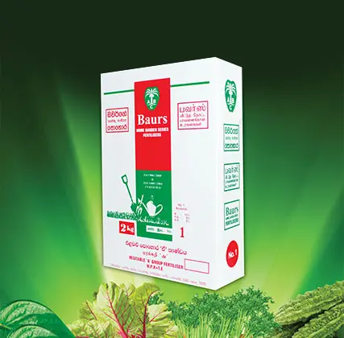
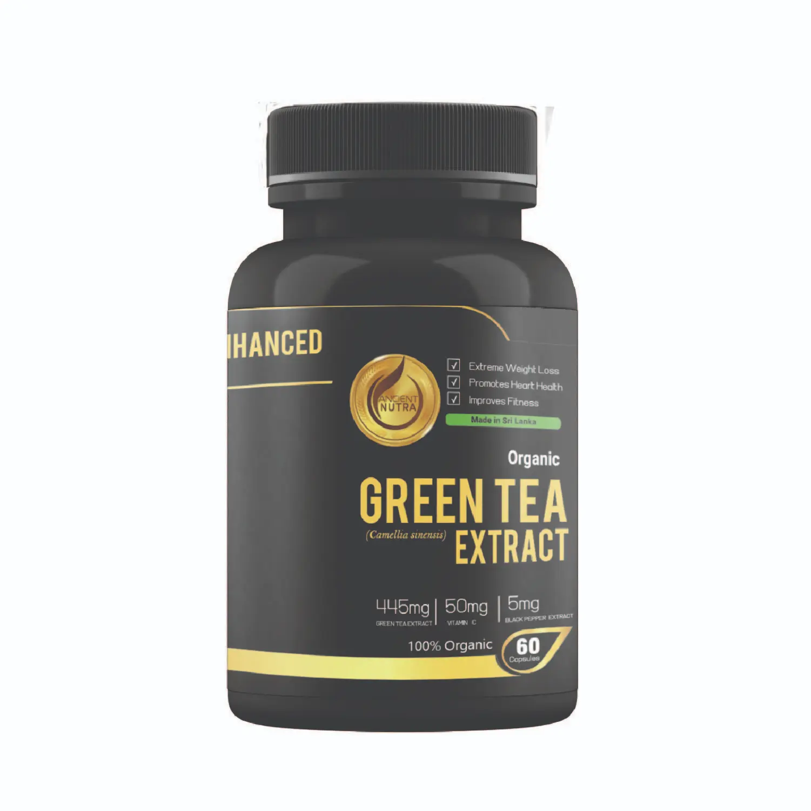
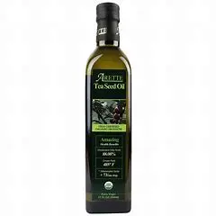

Byproducts of Tea
By definition, tea “waste” has little, if any, economic value. It’s a throwaway: dust, bits and pieces of twigs, damaged fragments of leaf, floor sweepings, stalks, and leftover detritus that doesn’t meet the standards or processes that result in it becoming part of the packaged end product. The term is misleading. Tea waste has many properties that can be turned into a commercial asset. Waste isn’t necessarily inert. The innovations exploit the chemical and molecular richness of the tea bush and its leaf. Waste retains polythenols, antioxidants, catechins, flavanols, cellulose, amino acid, nonsoluble proteins, caffeine, fiber, sugars, lignin, zinc, and tannic acid that make tea so rich in flavors, textures, and nutrients. The waste is easily processed to extract, mix, and shape these to create value instead of burning or burying it.
Fertilizer
Tea waste is packed with the compounds that make for a superior fertilizer: nitrogen, potassium and phosphorus. Case reports include horse stable manure when mixed with quarry sandstone dust, substrate for mushroom growing, vermicomposting — worm activation — compost for foliar (direct leaf) spraying and soil drenching that improve the plant’s access to nutrients and speed up toxin degradation, and specialty fertilizers with high levels of a particular ingredient.
Tea Extract
Utilization of tea extract in various fields has increased worldwide. The extract is used as dye, detergent, deodorant, sterilization agent and medical agent such as anti-dental caries agent and anti-inflammation agent. Green leaves of tea, oolong and black teas are used as raw materials of tea extract powder. The production system of tea extract powder is almost similar to that of instant tea; extraction with hot water or aqueous ethanol, separation, concentration and spray-drying.
Tea Seed Oil
Tea seeds are used as a source of supplementary protein and edible oil for human consumption, apart from many other industrial applications. The prospects of tea seed oil are immense. It can be a substitute for any edible oil; it can also be used as a cheaper alternative to olive oil which is mostly imported.